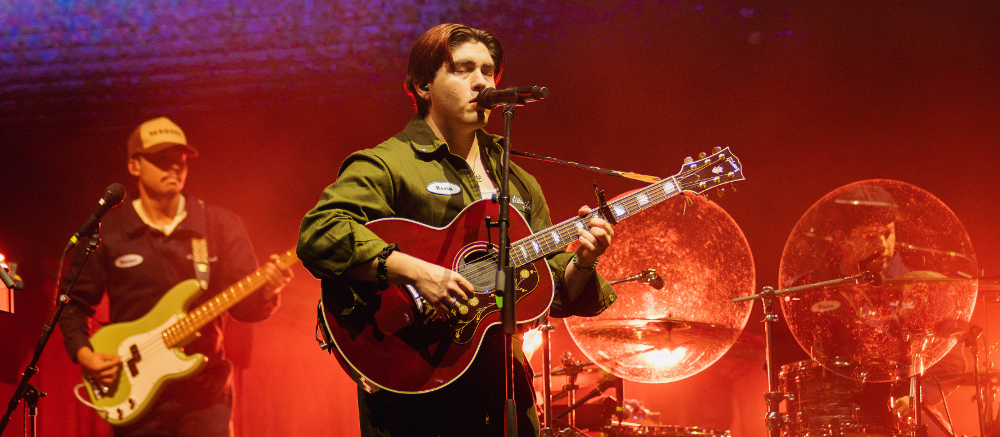

Kevin kaarl
La persona que me inspiró en iniciar en la musica fue kevin kaarl, por el empece a tocar la guitarra y animarme a cantar, mi top canciones de el son:
- Paris texas
- Si supieras
- Adios
- ¿Por que?
- Mujer distante
La persona que me inspiró en iniciar en la musica fue kevin kaarl, por el empece a tocar la guitarra y animarme a cantar, mi top canciones de el son: